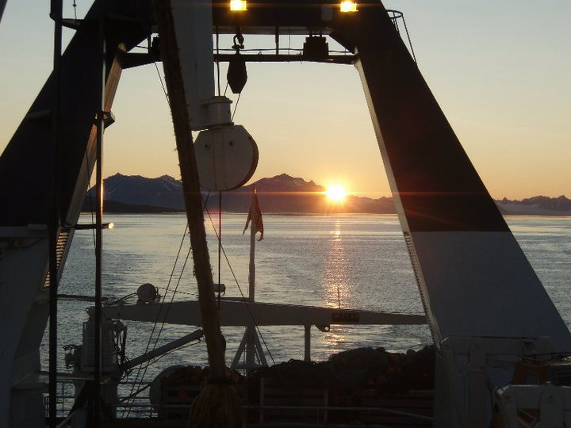
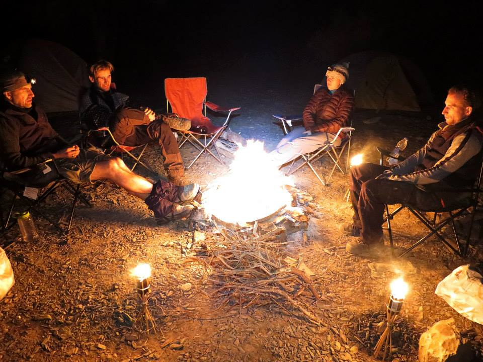

Are you interested in Earth history research? To apply, please reach out to Dr. Ahm in advance to discuss opportunities for both master's and PhD projects. Before contacting me, please review ongoing research projects (here) to make sure our research interests align. There are no fixed deadlines for applying for admission to the School of Earth and Ocean Sciences at UVic, but there are three official entry points for admission: January, May and September. The Faculty of Graduate Studies indicates that applications should be submitted as early as possible and that no assurance can be given that domestic applications received after May 31 or international applications received after December 15 can be processed in time to permit registration in the following Winter Session (Fall term).
We do not have allocated funding to hire postdoctoral researchers, but there are opportunities to apply for independent fellowships through different federal agencies in Canada. If you are interested in pursuing postdoctoral research in the Earth History Group, please reach out, and we can discuss research projects and funding opportunities.